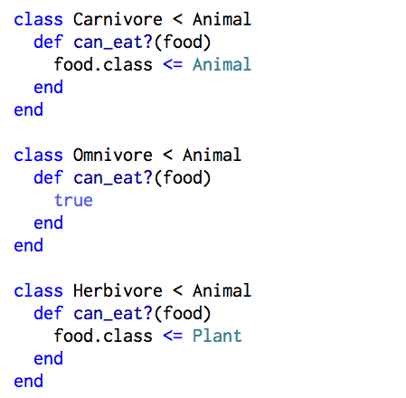

I am really trying to understand classes. Not just the syntax and general properties, but also giving purpose and meaning to classes, their super-class, and their sub-classes. Let's give it a go:
I love cheetahs. They're the most beautiful animal, both fierce and elegant. But I feel a little sad when they eat antelope, another beautifully graceful animal. What do cheetahs and antelope have in common? Well...they're both animals that eat something. So I'll make an Animal class that allows me to call the method #eat(food) to find out if my animal will eat that food.
Hm. Thinking back to my cheetah and antelope, cheetahs eat antelope but antelope do not eat cheetahs. So I'm going to make subclasses for all of the different type of eaters animals can be. Which means I should rep all the veggie-lovers out there.

Since carnivores, omnivores, and herbivores are all just types of animals, they should have the same properties as animals. So notice that the Carnivore, Omnivore, and Herbivore classes are defined to inherit all of the functions of their parent Animal class.
Now let's write a #can_eat? method that describes what each of these subclasses can eat! Carnivores eat all animals. Omnivores eat both animals...and plants! Herbivores eat all plants. Wait, what are plants? No problem. We should also make a new Plant class.
